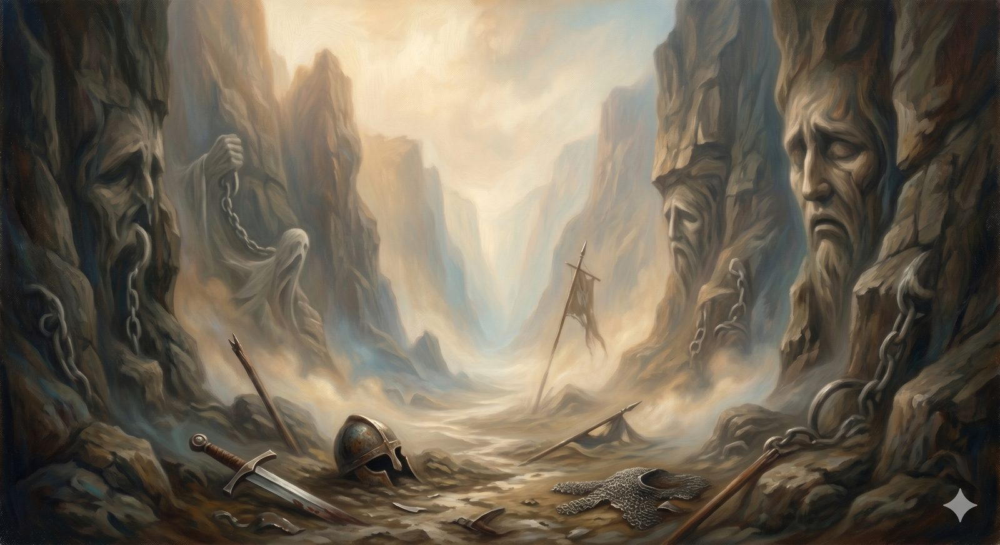

The Valley of the Shadow
The dark valley walked one step at a time — suffering, lament, and the God who came into it himself.
"Even though I walk through the valley of the shadow of death, I will fear no evil, for you are with me." Psalm 23:4 (ESV)
The second valley has a longer name — the Valley of the Shadow of Death — and Bunyan describes it as a place of deep darkness, with a narrow path running between a bottomless quag on one side and a deep ditch on the other. There are frightful noises, and the pilgrim cannot always tell which sounds are real and which his own fear. For part of the way he cannot even tell whether the prayers he is praying are his own. He walks it not by seeing clearly but by keeping to the path in the dark. And — this matters — morning comes.
This valley is suffering, and grief, and the seasons of darkness that the life of faith does not exempt anyone from. The road has to be careful here, more careful than anywhere else, because this is the one stretch where the wrong response does real harm. So before anything else: if you are in this valley now, this page is not going to hand you an argument. The valley is walked, not explained, and the first honest thing to say is that the dark is real.
Part OneTwo different problems
It helps, even in the dark, to know that "the problem of suffering" is really at least two different problems, and they need completely different things. There is the intellectual problem — the philosopher's question of how a good and all-powerful God can coexist with this much pain. And there is the personal problem — the wound, the where were you? of someone in the middle of loss. They can use the same words and be nothing alike.
The mistake that wounds people is answering the second with the first: meeting a grieving person with a tidy argument, as though the right explanation would make the ache go away. It will not, and offering it usually adds to the injury. Job's friends were never more helpful than in their first seven days, when they sat with him on the ground and said nothing. The intellectual problem has serious answers worth knowing — but they belong to a different moment than the wound, and the road keeps them apart on purpose.
Part TwoYou are allowed to say it in the dark
The most important thing this valley teaches is the same permission the Slough gave, only deeper: you may speak the darkness out loud, to God, and it is still faith. Scripture does not flinch from this. Psalm 88 walks all the way into the dark and ends there, unresolved, with no sunrise in the last verse — and the Spirit preserved it in the songbook of God's people, as if to say this experience belongs here, and does not have to be fixed before it can be prayed.
Even the laments that do turn toward hope show you something about when they turn. Listen to Lamentations: he has driven me into darkness without any light, the poet says — and only then, from the very bottom, but this I call to mind, and therefore I have hope: the steadfast love of the LORD never ceases; his mercies are new every morning. The hope is not cheap, and it is not a denial of the darkness. It is what he found at the bottom of it — that the hesed of God, his stubborn covenant love, outlasts even this. The turn comes after the descent, not instead of it. Anyone who tells you to skip to the hope has not read the verse.
In plain terms
If you are suffering, you do not have to tidy it up before you bring it to God. Roughly a third of the Psalms are complaints, some of them furious, one of them ending in flat darkness — and God put them in the Bible as the words you are allowed to use.
Honesty in the dark is not the failure of faith. It is one of its oldest and most trusted forms.
Part ThreeThe God who came into the valley
And here is the one thing the Christian faith says that no philosophy says — the thing that does not answer the dark so much as join you in it. The God of this story did not stay at a safe distance from suffering and send instructions. He came into the valley himself. On the Cross, Jesus prayed the opening line of one of the darkest Psalms — my God, my God, why have you forsaken me? — which means that the cry of abandonment, the very language of this valley, has been on God's own lips. There is no part of the dark you can walk into where he has not already been.
That is not a tidy answer, and the road will not pretend it is one. It is something better than an answer: a companion. The valley still has to be walked, in the dark, one step at a time. But it is walked by a path that someone has walked before you, all the way through, and out the far side into morning. Bunyan is careful to note that Christian gets through the valley by daybreak — that the darkness, however total it felt, had an eastern edge.
He did not send instructions into the valley. He came into it — and the cry of this place has been on his own lips.
The dark valleys end. Not always when we want, and not always with the explanation we wanted, but they end — and the pilgrim who comes through this one comes out changed, with a tenderness toward others in the dark that he could not have learned anywhere else. The road climbs back toward the daylight now, and toward a noisy, crowded place where the danger is no longer darkness, but everything bright and for sale.